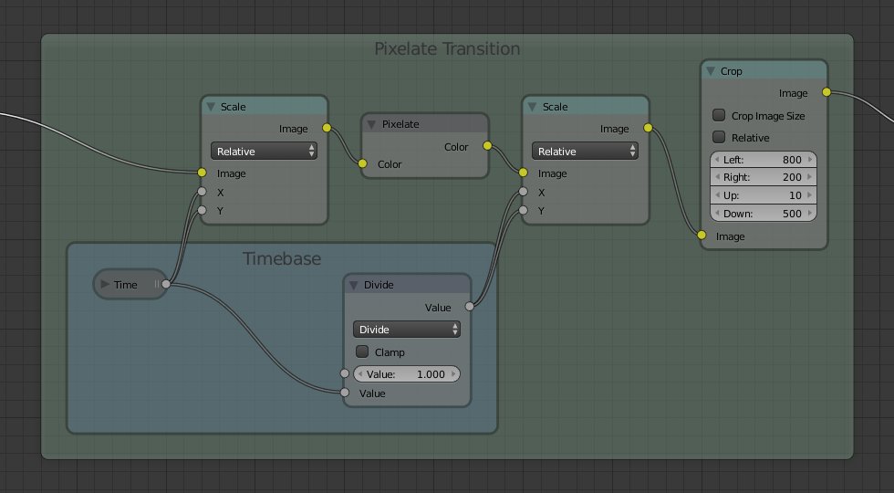
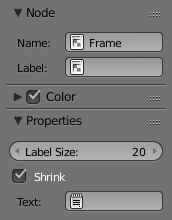

Вузол «Кадр» -- Frame Node¶
Вузол «Кадр» -- Frame -- це корисний засіб для організування вузлів шляхом збору відповідних вузлів разом у спільній для них окремій області. Кадри є корисними, коли уклад вузлів стає великим та заплутаним, але створення Групи Вузлів -- Node Group або групового вузла ще не потребується.

Властивості -- Properties¶

- Розмір Позначки -- Label size
- Розмір шрифту позначки. Наприклад, для підпорядкованих кадрів мати менші титри.
- Стискання -- Shrink
- Після поміщення вузла у Кадр, останній буде звужуватися навколо нього, щоб вилучити зайвий простір. З цього моменту більше неможливо захопити край Кадру для зміни його розміру, натомість зміна розміру відбувається автоматично, коли вузли у межах Кадру перевпорядковуються. Ця поведінка може бути змінена, вимкненням цієї опції.
- Текст -- Text
- When you need to display more comprehensive text, frame nodes can display the contents of a text data-block. This is read-only, so you will need to use the Text Editor to modify the contents.
Редагування -- Editing¶
Додання -- Adding¶
Орієнтир
| Mode: | All Modes |
|---|---|
| Hotkey: | Ctrl-P |
Після поміщення вузла Кадр у редактор, вузли можуть бути додані у нього простим перекиданням їх на область кадру або шляхом виділення спочатку цих вузла(ів), останнім самого кадру, та виклику команди сполучення Ctrl-P.
Вилучити з Кадру -- Remove from Frame¶
Орієнтир
| Mode: | All Modes |
|---|---|
| Menu: | |
| Hotkey: | Alt-P |
To remove them, select the node(s) and use the Alt-P shortcut. This uses the same default keyboard bindings as Parenting and can be thought of as a similar concept.